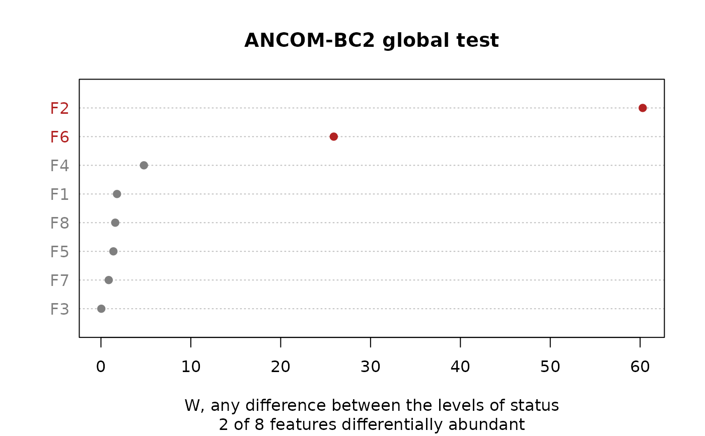
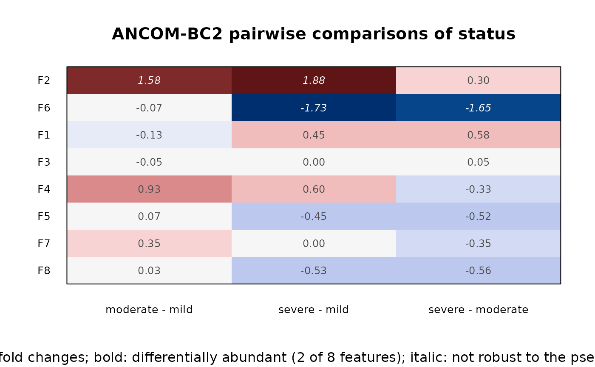

Multigroup tests on a fit from ancombc() or ancombc2(), for a
categorical variable with three or more levels (Lin & Peddada 2024), as
scikit-bio's ANCOMBCResult methods:
Usage
ancombc_global(
fit,
groups = attr(fit, "groups"),
alpha = attr(fit, "alpha"),
p_adjust = attr(fit, "p_adjust"),
cpus = n_cpus()
)
ancombc_pairwise(
fit,
groups = attr(fit, "groups"),
alpha = attr(fit, "alpha"),
p_adjust = attr(fit, "p_adjust"),
cpus = n_cpus()
)
ancombc_dunnett(
fit,
groups = attr(fit, "groups"),
alpha = attr(fit, "alpha"),
p_adjust = attr(fit, "p_adjust"),
n_bootstraps = 100L,
seed = 0L,
cpus = n_cpus()
)
ancombc_trend(
fit,
groups = attr(fit, "groups"),
alpha = attr(fit, "alpha"),
p_adjust = attr(fit, "p_adjust"),
patterns = NULL,
nodes = NULL,
n_bootstraps = 100L,
seed = 0L,
cpus = n_cpus()
)Arguments
- fit
A result of
ancombc()orancombc2().- groups
The categorical variable to compare: the name of a main-effect term of the fit's formula with at least three levels. Default: the fit's own
groups. (Any such term can be given, since the fit keeps every coefficient's covariances.)- alpha
The significance level of the adjusted p-values. Default: the fit's.
- p_adjust
The adjustment of the p-values (any method of
stats::p.adjust()): across the features forancombc_global()andancombc_trend(); within each feature, as the family-wise error control of mdFDR, forancombc_pairwise()andancombc_dunnett(). Default: the fit's.- cpus
How many parallel processing threads should be used. The default,
n_cpus(), will use all logical CPU cores.- n_bootstraps
The number of bootstrap draws of the null statistics, per feature. Default:
100, as scikit-bio and ANCOMBC. Each p-value of the trend test is a proportion of these draws, so it needs many more (about 10,000) to be stable.- seed
An integer seed for the random draws. The same
seedgives the same results, for any number ofcpus.- patterns
ancombc_trend(): the ordered patterns to test, as a named list of constraint matrices, each with one column per coefficient ofgroups(in the design's order) and one row per constraintC %*% beta >= 0. Default:increasinganddecreasing, the coefficients (against the reference level, 0) rising, or falling, from level to level.- nodes
ancombc_trend(): for each pattern, the coefficient (an index into thegroupscoefficients) whose contrast with the reference and with the last level gives the test statistic. Default: the last, for every pattern.
Value
A data frame of class c('ecodive_ancombc_<test>', 'data.frame').
ancombc_global() and ancombc_trend(): one row per feature, with
feature, (ancombc_trend(): pattern, the pattern with the largest
statistic,) w (the statistic), p_value, p_adjusted and reject.
ancombc_pairwise() and ancombc_dunnett(): one row per feature and
comparison, with feature, comparison ('b - a': level b against
level a; with no intercept, a level alone is its own coefficient),
log_fc, se, w, p_value, p_adjusted and reject. As in
scikit-bio and ANCOMBC, p_value is set to 1 for the features that
the screening global test didn't find (and wherever it would be 0 or
NaN), and p_adjusted is the mdFDR-adjusted value.
When the fit was made with sensitivity (see ancombc()), each test
is repeated on the fit at every pseudocount, and the table gains
passed_ss (the decision is the same in every fit; for the trend test,
the global test's decision, as in ANCOMBC) and reject_robust
(reject & passed_ss), the decisions to use.
Attributes: method (the fit's), groups, alpha, p_adjust, for
ancombc_pairwise() and ancombc_dunnett() log_base (exp(1):
log_fc is a natural log), for the bootstrapped tests n_bootstraps
and seed, and with the sensitivity analysis sensitivity (its
pseudocounts).
Details
ancombc_global(): does the feature differ between any of the levels? A Wald-type test of all the variable's coefficients at once.ancombc_pairwise(): every level against the reference, and every pair of the other levels, with the mixed directional false discovery rate (mdFDR) screened by the global test.ancombc_dunnett(): every level against the reference only, with mdFDR screened by a bootstrapped global test (Dunnett's type).ancombc_trend(): does the feature follow an ordered pattern across the levels (by default increasing or decreasing)? Constrained estimates, with a bootstrapped p-value.
With \(\hat\beta_f\) the feature's \(k\) coefficients of groups
and \(V_f\) their covariance matrix (from the fit):
Global test: \(W = \hat\beta' V^+ \hat\beta\), referred to \(\chi^2_k\) (
ancombc()) or \(F_{k, \nu}\) (ancombc2(), with the feature's residual degrees of freedom), with the two-sided p-value \(2 \min(P, 1 - P)\), as in ANCOMBC and scikit-bio.Pairwise and Dunnett's tests: each comparison's \(W = \hat\delta / \mathrm{se}\), against the normal or t distribution as in the fit. mdFDR (Guo, Sarkar & Peddada 2010): a global screen at
alpha, with Benjamini-Hochberg across features (the global test for pairwise; for Dunnett's, the largest \(|W|\) againstn_bootstrapsdraws of the largest of \(k\) null t or normal values); then each screened feature's comparisons are adjusted withp_adjustfor a family of \(m D / R\) tests (\(m\) comparisons, \(D\) features, \(R\) passing the screen).Trend test: for each pattern, the estimate closest to \(\hat\beta\) in the metric \(V^{-1}\) that satisfies its constraints (a small quadratic programme); its statistic is \(\max(|\beta_{node}|, |\beta_{node} - \beta_k|)\), and \(W\) the largest over the patterns. The p-value is the proportion of
n_bootstrapsnull draws (standard normal coefficients, projected the same way and scaled by the standard errors) whose statistic exceeds \(W\); thenp_adjustacross features.
Features whose coefficients can't be estimated get NaN statistics and a
p-value of 1.
Random numbers. The bootstraps use ecodive's own generator (PCG),
with seed: one stream per feature, so results are identical for any
cpus and a feature's results don't depend on the others.
ancombc_global() and ancombc_pairwise() draw nothing.
Differences from scikit-bio and ANCOMBC
The statistics and deterministic p-values are scikit-bio's (0.7.4), to
about 1e-10 given the same fit; the bootstrapped p-values agree with
scikit-bio's in distribution (they agree exactly given the same null
draws), not draw for draw, since the random numbers differ. The trend
test's constrained estimates are the exact solutions of its quadratic
programmes, which scikit-bio's SLSQP and ANCOMBC's quadprog
approximate. Comparisons are labelled with level names (scikit-bio:
status[T.severe]_status[T.moderate]), and groups can differ from
the fit's.
References
Lin, H., & Peddada, S. D. (2024). Multigroup analysis of compositions of microbiomes with covariate adjustments and repeated measures. Nature Methods, 21, 83–91.
Guo, W., Sarkar, S. K., & Peddada, S. D. (2010). Controlling false discoveries in multidimensional directional decisions, with applications to gene expression data on ordered categories. Biometrics, 66, 485–492.
Examples
x <- rbind(
c(1, 10, 16, 0, 0, 12, 0, 7), c(0, 10, 45, 2, 1, 25, 1, 9),
c(4, 8, 22, 1, 5, 14, 1, 5), c(1, 11, 22, 1, 4, 14, 1, 3),
c(4, 7, 36, 0, 0, 19, 0, 9), c(2, 30, 26, 0, 0, 12, 1, 0),
c(1, 36, 10, 1, 5, 15, 2, 9), c(1, 25, 11, 2, 2, 8, 0, 5),
c(1, 36, 23, 0, 2, 11, 1, 2), c(3, 60, 33, 3, 4, 14, 1, 6),
c(3, 57, 30, 3, 1, 3, 0, 4), c(0, 65, 23, 0, 2, 2, 0, 8),
c(2, 46, 19, 0, 1, 2, 0, 1), c(0, 41, 26, 0, 2, 0, 0, 3),
c(3, 46, 20, 0, 0, 3, 0, 0) )
dimnames(x) <- list(paste0('S', 1:15), paste0('F', 1:8))
meta <- data.frame(
status = rep(c('mild', 'moderate', 'severe'), each = 5),
age = c(25, 48, 23, 35, 52, 51, 18, 29, 40, 29, 44, 39, 26, 37, 46),
row.names = rownames(x) )
fit <- ancombc2(x, ~ status + age, meta, groups = 'status')
res <- ancombc_global(fit)
res
#> # A data.frame: 8 × 7
#> # ANCOM-BC2 global test
#> feature w p_value p_adjusted reject passed_ss reject_robust
#> <chr> <dbl> <dbl> <dbl> <lgl> <lgl> <lgl>
#> 1 F1 1.79 0.457 1 FALSE TRUE FALSE
#> 2 F2 60.3 2.36e-06 1.89e-05 TRUE TRUE TRUE
#> 3 F3 0.04 0.0781 0.469 FALSE TRUE FALSE
#> 4 F4 4.78 0.233 1 FALSE TRUE FALSE
#> 5 F5 1.39 0.623 1 FALSE TRUE FALSE
#> 6 F6 25.9 0.000222 0.00155 TRUE FALSE FALSE
#> 7 F7 0.865 0.975 1 FALSE TRUE FALSE
#> 8 F8 1.59 0.513 1 FALSE TRUE FALSE
#> # Attributes: method, groups, alpha, p_adjust, sensitivity
plot(res)

res <- ancombc_pairwise(fit)
res[res$reject, ]
#> # A data.frame: 4 × 10
#> # ANCOM-BC2 pairwise tests
#> feature comparison log_fc se w p_value p_adjusted reject
#> <chr> <chr> <dbl> <dbl> <dbl> <dbl> <dbl> <lgl>
#> 4 F2 moderate - mild 1.58 0.287 5.5 0.000186 0.00204 TRUE
#> 5 F2 severe - mild 1.88 0.3 6.27 6.07e-05 0.000729 TRUE
#> 17 F6 severe - mild -1.73 0.343 -5.04 0.000505 0.00606 TRUE
#> 18 F6 severe - moderate -1.65 0.402 -4.12 0.00209 0.023 TRUE
#> # … 2 more columns: passed_ss <lgl>, reject_robust <lgl>
#> # Attributes: method, groups, alpha, p_adjust, log_base, sensitivity
plot(res)

ancombc_dunnett(fit)
#> # A data.frame: 16 × 10
#> # ANCOM-BC2 Dunnett's tests
#> feature comparison log_fc se w p_value p_adjusted reject
#> <chr> <chr> <dbl> <dbl> <dbl> <dbl> <dbl> <lgl>
#> 1 F1 moderate - mild -0.13 0.428 -0.305 1 1 FALSE
#> 2 F1 severe - mild 0.45 0.446 1.01 1 1 FALSE
#> 3 F2 moderate - mild 1.58 0.287 5.5 0.000186 0.0013 TRUE
#> 4 F2 severe - mild 1.88 0.3 6.27 6.07e-05 0.000486 TRUE
#> 5 F3 moderate - mild -0.0542 0.271 -0.2 1 1 FALSE
#> 6 F3 severe - mild -0.00402 0.297 -0.0135 1 1 FALSE
#> 7 F4 moderate - mild 0.933 0.427 2.19 1 1 FALSE
#> 8 F4 severe - mild 0.6 0.516 1.16 1 1 FALSE
#> 9 F5 moderate - mild 0.0693 0.388 0.178 1 1 FALSE
#> 10 F5 severe - mild -0.448 0.467 -0.96 1 1 FALSE
#> 11 F6 moderate - mild -0.0749 0.283 -0.264 0.797 1 FALSE
#> 12 F6 severe - mild -1.73 0.343 -5.04 0.000505 0.00404 TRUE
#> 13 F7 moderate - mild 0.348 0.44 0.791 1 1 FALSE
#> 14 F7 severe - mild 0 0.516 0 1 1 FALSE
#> 15 F8 moderate - mild 0.0282 0.411 0.0687 1 1 FALSE
#> 16 F8 severe - mild -0.53 0.444 -1.19 1 1 FALSE
#> # … 2 more columns: passed_ss <lgl>, reject_robust <lgl>
#> # Attributes: method, groups, alpha, p_adjust, log_base, n_bootstraps, seed,
#> # sensitivity
ancombc_trend(fit, n_bootstraps = 1000)
#> # A data.frame: 8 × 8
#> # ANCOM-BC2 trend test
#> feature pattern w p_value p_adjusted reject passed_ss reject_robust
#> <chr> <chr> <dbl> <dbl> <dbl> <lgl> <lgl> <lgl>
#> 1 F1 increasing 0.513 0.278 1 FALSE TRUE FALSE
#> 2 F2 increasing 1.88 0 0 TRUE TRUE TRUE
#> 3 F3 decreasing 0.0314 0.988 1 FALSE TRUE FALSE
#> 4 F4 increasing 0.833 0.119 0.714 FALSE TRUE FALSE
#> 5 F5 decreasing 0.485 0.355 1 FALSE TRUE FALSE
#> 6 F6 decreasing 1.73 0 0 TRUE FALSE FALSE
#> 7 F7 increasing 0.232 0.789 1 FALSE TRUE FALSE
#> 8 F8 decreasing 0.539 0.228 1 FALSE TRUE FALSE
#> # Attributes: method, groups, alpha, p_adjust, n_bootstraps, seed,
#> # sensitivity, patterns, nodes, coef